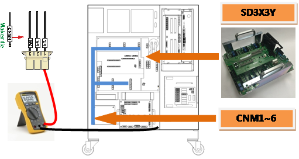
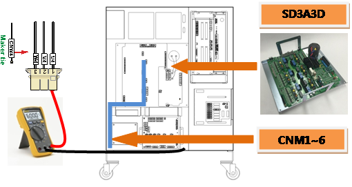
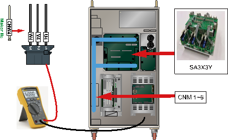

Previous error code: E0112 (○ axis) IPM fault
1.1.62.1. Outline
A fault output has occurred from an IPM (Intelligent Power Module) – a switch device inside of Servo Drive Unit that drives the motor. IPM fault could occur due to a temperature increase in the heat protection plate, a drop in the control voltage, or an overcurrent output in the IPM. This error occurs when the IPM fault is detected while the servo is off. While in the servo off state, the IPM will carry out inspection only on the control voltage drop. Therefore, checking the gate drive power is required.
1.1.62.2. Causes and examine methods
|
< When the IPM fault error occurs while in the servo off state > (1) Please examine the components that are related to the motor drive. n Replace the CNBS cable of the relevant axis and then check the error. n Please replace the servo drive unit and confirm the error. n Please replace the servo board(BD544) and confirm the error. |
(1) Please examine the components that are related to the motor drive.
Servo Drive Unit that drives the motor receives a command from the Servo Board (BD544) through CNBS cable, and the current output of internal amplification circuit will be transferred to the motor through wirings that connected to each connectors of axis.
n Examine the output cable that connects to the Servo Drive Unit
Examine the wirings that connect the Servo Drive Unit to the motor. Please turn off the power of controller, and remove the connector from the Servo Drive Unit and measure the resistance value between grounds to inspect the occurrence of short circuit.

(a) Hi5a-S00 controller

(b) Hi5a-S30 controller

(c) Hi5a-N00 controller
(d) Hi5a-N30 controller
Figure 1.177 Checking the servo drive unit output cable
n Replacement and inspection of servo drive unit
If the error does not persist after the replacement of Servo Drive Unit, Servo Drive Unit is faulty. Please replace the Servo Drive Unit with new one.
Ø Hi5a-S controller
l Medium size Robot's Servo Drive Unit: SD3X3Y
l Small size Robot's Servo Drive Unit: SD3A3D
Ø Hi5a-N controller
l Medium size Robot's diode module : SD1L2C
l Small size Robot's Servo Drive Unit : SA3A3D
n Replacement of Servo Board (BD544) and examine it
If the error does not persist after the replacement of Servo Board (BD544), Servo Board (BD544) is faulty. Please replace the Servo Board (BD544) with new one.